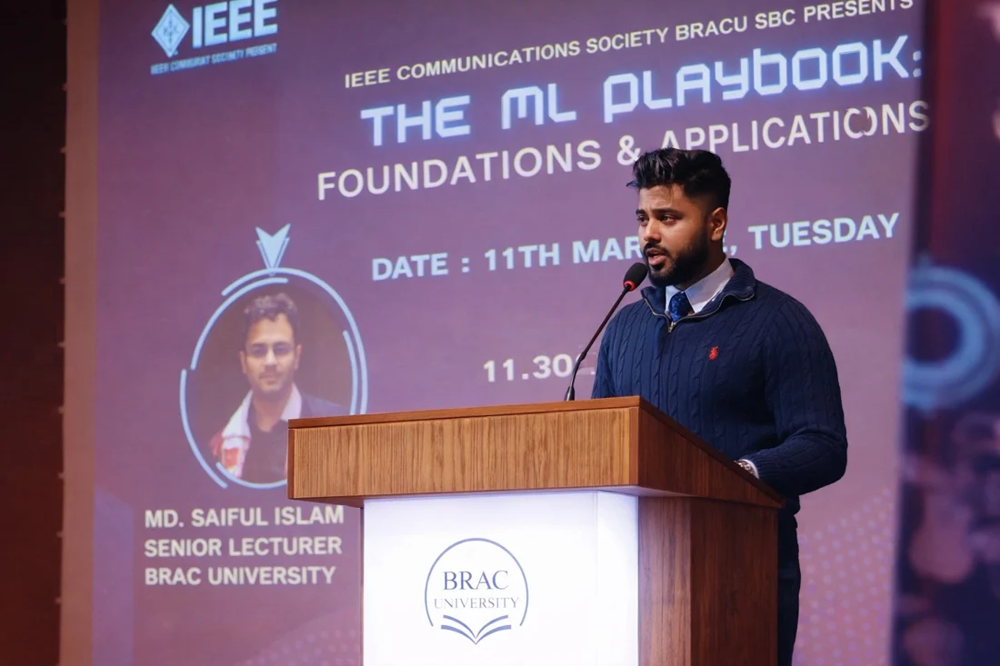
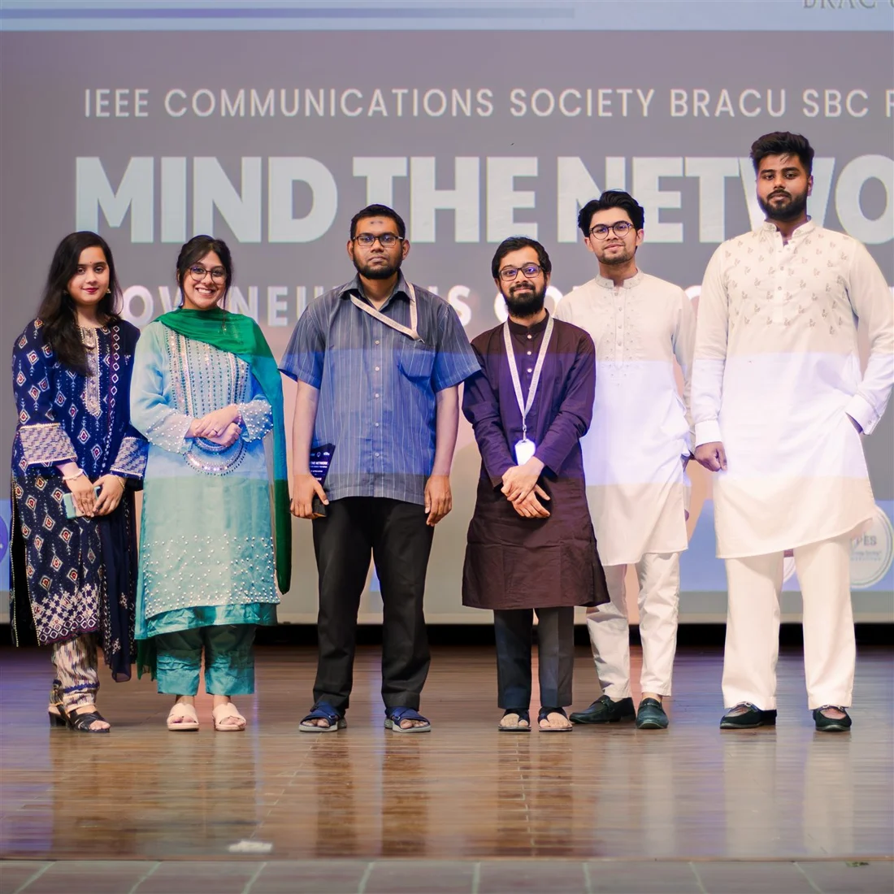
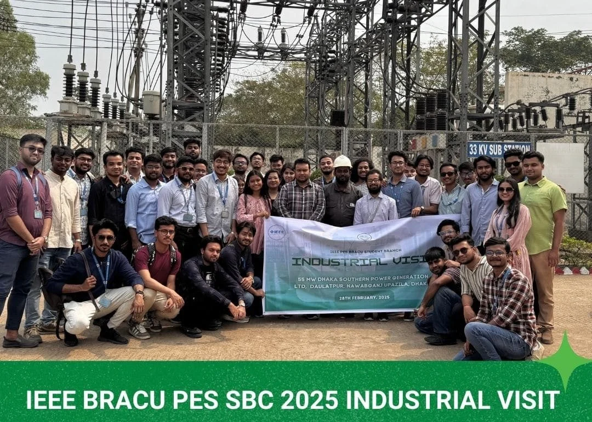

IEEE Bangladesh Section Chairs’ and Counselors’ Summit
Represented BRAC University’s IEEE Student Branch and shared the branch’s experience with student chairs and counselors from across Bangladesh.
Dhaka, Bangladesh
Engineering student, IEEE chair, and fintech co-founder.
I study electrical and electronic engineering at BRAC University, lead its IEEE Student Branch, and build research tools for Bangladesh’s equity market. I’m interested in finance and how good analysis informs decisions.

Impact at a glance
32-member executive body and 177 student members on the 2026 roster.
PES, CS, RAS, AESS, ComSoc and EDS, all of which I helped organise events for in 2025.
Hosting, speaking and representing IEEE, JCI, BUEEC, EDF and other clubs.
Across IEEE BRACU chapters, campus clubs and JCI Dhaka Heritage.
Outreach and workshops for the UIHP Smart Unibator programme at BRAC University.
Maths, physics and chemistry for O Level, IGCSE, A Level and IB students.
Project Kaizen placed third nationally at the University Innovation Hub Programme.
Across Asia and Europe, from South Korea to Germany.
Experience & recognition
Represented BRAC University’s IEEE Student Branch and shared the branch’s experience with student chairs and counselors from across Bangladesh.
Won the Centre for Entrepreneurship Development’s startup idea competition during BRAC University’s Silver Jubilee. The competition drew over 70 applications.
Read the CED announcementReceived a Best Volunteer Performer Award and was named Chairperson for International Cooperation & Global Goals for the 2027 term.
Read the handover coverageReceived and declined an offer to join the first Deli Campus Lead cohort.
Shared practical advice on applying for campus ambassador programs, preparing for interviews, and making use of the role after selection.
IEEE event record2026
Earned the ISCEA Certified Supply Chain Analyst (CSCA) credential after studying supply chain planning, inventory, operations, and logistics.
2026
Worked on proposals for youth employment at Devthon 7.0, supply-chain resilience in the ISCEA Prize case competition, and RFID adoption in Checkmate 3.0.
Helped organize the IEEE Computer Society BRACU chapter’s seminar on careers in big tech and startups, bringing students together with founders, industry leaders, and venture investors.
BRAC University coverage
July
Completed the Forage simulation, covering acquisition target screening, an auction process, and an investment recommendation.
From February
Lead a 32-member executive body across the branch and six technical chapters. Oversee budgets, sponsorship, logistics, and university coordination. Established five specialized working groups and opened collaborations with IEEE student branches at IUBAT and Southeast University.
My term has included IEEE Professional Month and preparations for the IEEE Intervarsity Technical Championship.
Branch leadership directoryAll year
In 2025 I worked across the whole branch rather than one chapter. I helped organise seminars, workshops, industrial visits and ceremonies for PES, CS, RAS, AESS, ComSoc and EDS, covering planning, guest coordination, hosting and on-the-day logistics. The following year I became Branch Chair.


2025 tenure
Managed chapter finances and helped plan and deliver technical events. Worked across the branch’s chapters on event organization, from promotion and registration to guest coordination, hosting, and on-the-day logistics.
Highlights included ComSoc’s Mind the Network seminar and The ML Playbook, IEEE Week and PES programming, and work on the chapter’s Byte the News publication.
ComSoc chapter

March–November
Pitched the venture at the University Innovation Hub Programme startup competition. Project Kaizen placed third nationally and secured BDT 50,000 in seed funding.
March–August
Ran campus outreach for the University Innovation Hub Programme’s Smart Unibator at BRAC University. Reached 1,000+ students through classroom visits, social media and info sessions, brought in 150+ registrations, and helped deliver 8 workshops for participants.
2024
Started my B.Sc. in Electrical and Electronic Engineering and joined the branch as a student member.
2024 IEEE rosterVentures & engineering
Fintech · Co-founder
Building an investment research tool for the Dhaka Stock Exchange. The work uses transparent factor scores and historical testing to explain what the available data says about listed companies.
Engineering · Final-year design project
Developing a machine-learning approach to modelling electricity demand using Bangladesh Power Development Board grid data.
Entrepreneurship · Founder
Developed and pitched a student venture that secured BDT 50,000 in seed funding through the University Innovation Hub Programme.
Hosting, speaking & community
As host, speaker and representative for IEEE, JCI, BUEEC, EDF and other clubs.
I started out on the organising side, handling guests and run-of-show, and was soon asked to take the microphone. Since then I’ve hosted seminars, workshops, award ceremonies and club fests, keeping programmes on time and audiences engaged. Hosting led to speaking: in 2026 I spoke at IEEE Professional Month and represented BRAC University at the IEEE Bangladesh Section Chairs’ and Counselors’ Summit.
Hosted and supported technical and professional-development sessions across the branch’s chapters, including ComSoc’s Mind the Network and The ML Playbook. Now lead the branch as Chair.
Served as Head of Star Management and received the Best Executive Award at Entrepreneur’s Fest 3.0. Coordinated guests and speakers and supported the forum’s flagship events from planning to stage.
Took on stage and event responsibilities for the club, hosting and helping run its sessions for EEE students. Add your BUEEC role and years.
Volunteered on stage and behind it at chapter programmes. Received the Best Volunteer Performer Award in November 2026 and was named Chairperson for International Cooperation & Global Goals for the 2027 term.
JCI leadership announcementLearning & credentials
2024–present. Engineering coursework and lab work include:
Private academic tutoring
Five years of experience supporting students from schools across Dhaka and online, with a focus on maths, physics, and chemistry.